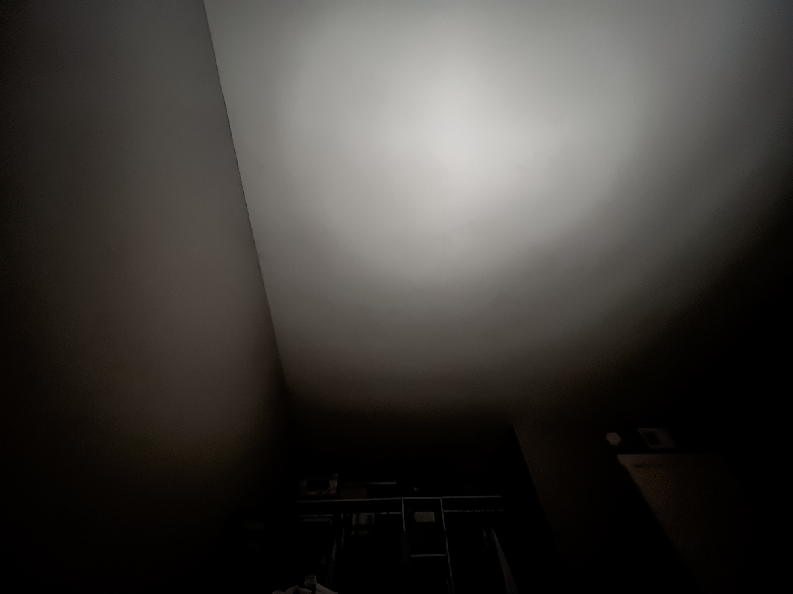

Graphical Artworks
Down below are 5 artworks I created using techniques from Art 74, taught by Professor James Morgan, and concepts from Art 12, taught by Professor Erik Friedman.
Dreamer's Sleep, 2021, Art 74
For the final project of the Art-74 class, I decided to create an art piece of 3 scenes on the topic of sleep paralysis and lucid dreaming. I took pictures from my bed in the common locations that I am in during my sleep paralysis and lucid dreams and modified them with Photoshop and Audacity glitches. The first set of images depicts the upward position of sleep and the lucid dreams of drowning or sinking. The second images have depictions of a room on fire due to the lucid dreams I would have in the side sleeping position. Lastly, the final images depict the multiple sleep paralysis demons I would see in my sleep, a shadow, eyes in the doorway, and warped hands.
Click this link to see the diptych format that the artwork is intended to be seen as.


First Scene
This first scene is a representation of the lucid dreams of drowning I have when I sleep on my back. Using Photoshop, I made the scene as if the room was filled with water and the air bubbles are escaping to the surface. Lastly, I used Audacity to glitch the artwork in order to emphasize the fear of drowning I have in those dreams.
Second Scene
In this second scene, I made one of the visions of lucid dreams I have when I sleep on my side. With Photoshop, I edited my room as if it was on fire and then used Audacity to glitch the image to entice fear.
Third Scene
To represent sleep paralysis, I drew multiple figures that I see in my visions. I used Photoshop to draw the figures: a shadowy figure, eyes in the doorway, and hands emerging from the door. With Audacity, I glitched the artwork to enhance the fear of the vision seen in this scene.
2D vs 3D, 2022, Art 12
In this project, we had to produce two art pieces that resemble 2d and 3d perspectives. For this project, I went with having a 2d and 3d art piece of the same scene in order to make it easy to distinguish between the two. In the 2d piece, the lack of shading and the flat colors and shapes is what gives no depth and makes it 2d. In the 3d piece, I add a light source with shading, use perspective lines with a vanishing point, and change the viewer's location to shift the attention to the aspects of 3d.
2D

3D

My Personality, 2022, Art 12
For this project, I had to create a rendition of my personality as an art piece. To describe my personality, I put a smaller version of myself in my head with a light that shines because I would consider myself as someone who likes to sit in their own thoughts. Externally, I am reserved and very calm, but in my head I let my imagination run free. The light that shines bright in my art resembles my ideas while the smaller version of me in my head resembles how I am lost in my thoughts, blinded by the light.
Glitched Nature, 2021, Art 74
Utilizing the programs Notepad++ and Audacity, I created these three glitched images of nature via the techniques learned in class. In Notepad++ I opened the source code of the first 2 images and added or removed letters and digits from it in order to warp and distort the light and shape of the original image. For the third image, the image’s source code was converted into a raw sound source. Using the various sound effects from the program, I warped the sound and exported it and converted it back into an image. The use of nature images were to juxtapose the glitch effects applied to the images.
Fire (Notepad++ Glitch)

Lake (Notepad++ Glitch)

Trees (Audacity Glitch)